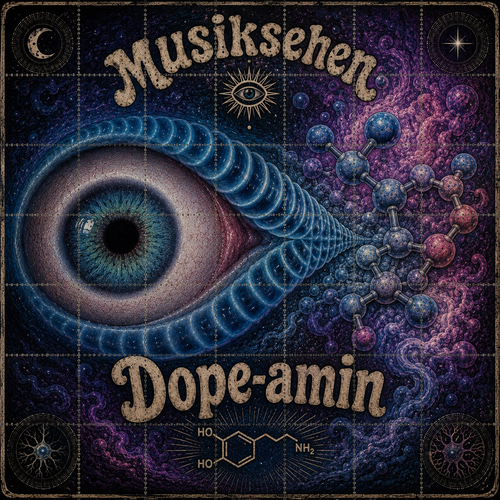

Dope-amin
Neuerscheinung von Musiksehen · 15. Oktober 2026

Streaming
Jetzt anhören
Eine Veröffentlichung von Musiksehen, dem Musikprojekt von Thorsten Baierl.
Neuerscheinung von Musiksehen · 15. Oktober 2026

Eine Veröffentlichung von Musiksehen, dem Musikprojekt von Thorsten Baierl.